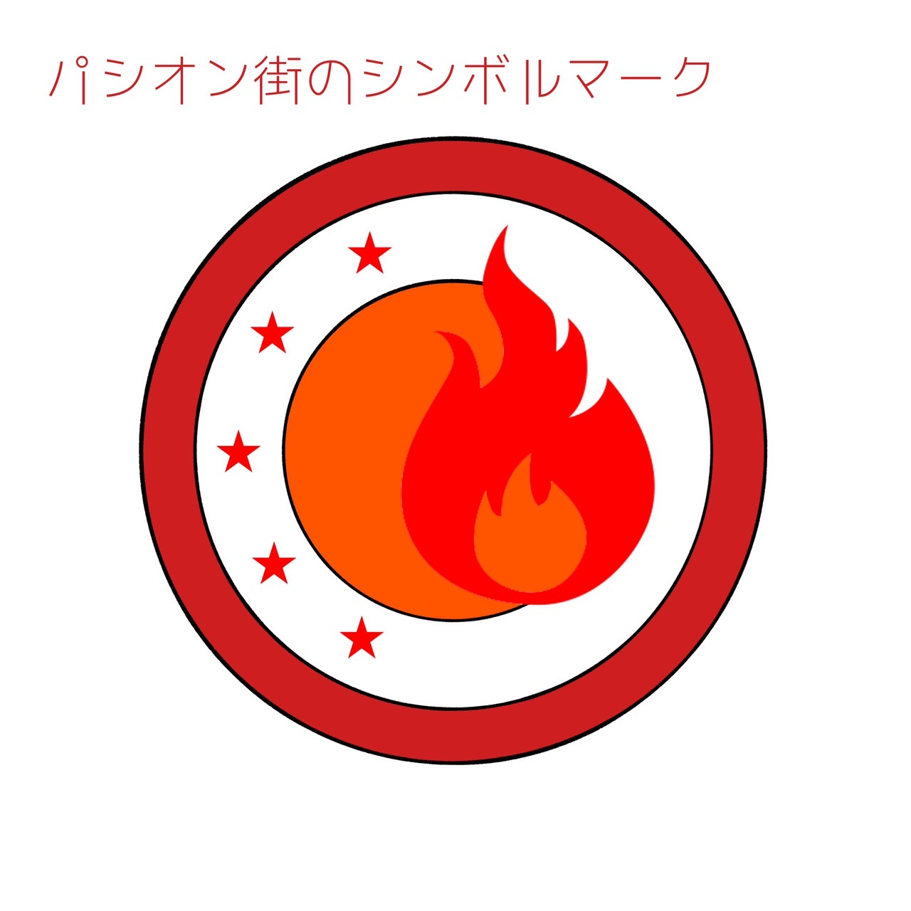
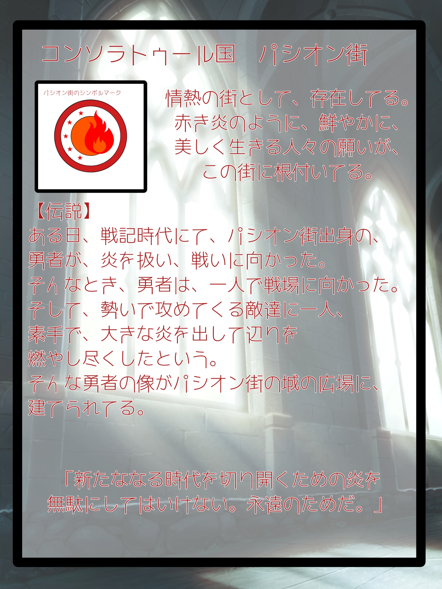
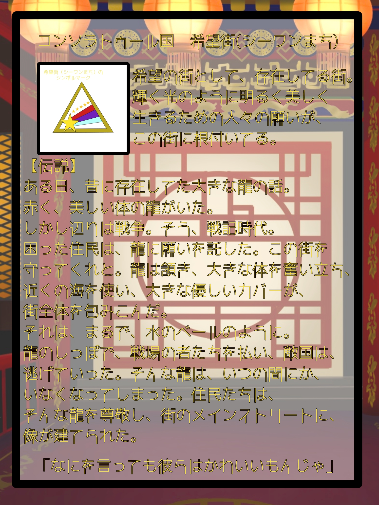
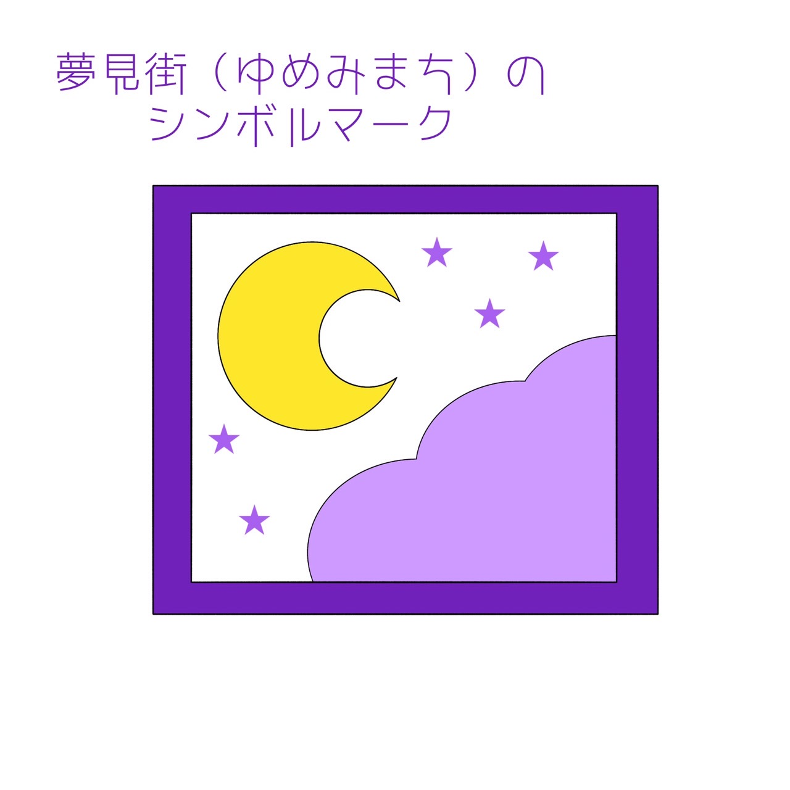
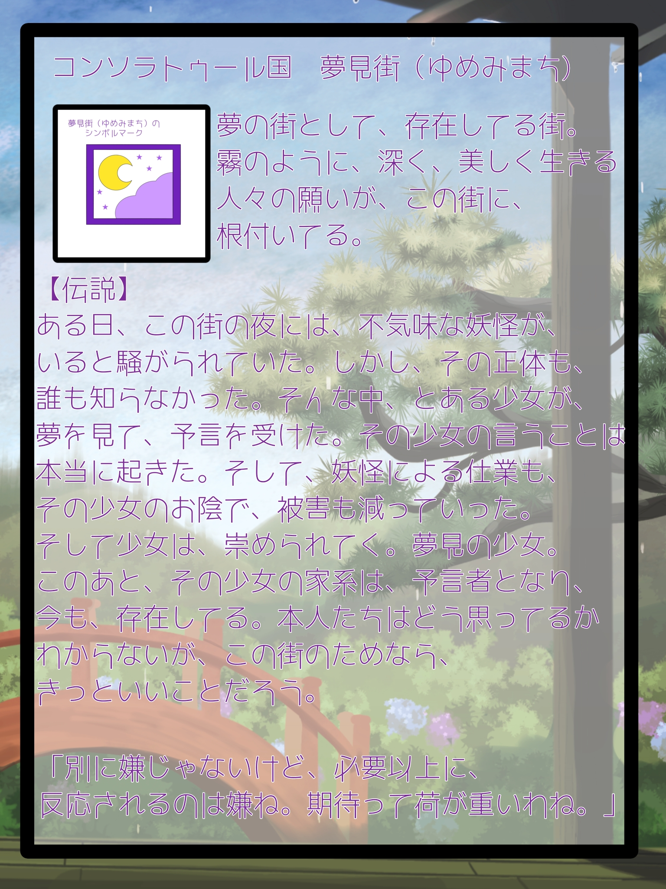
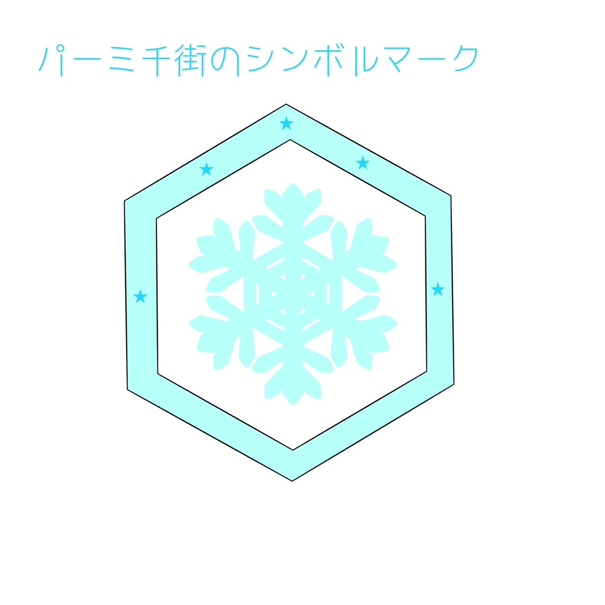
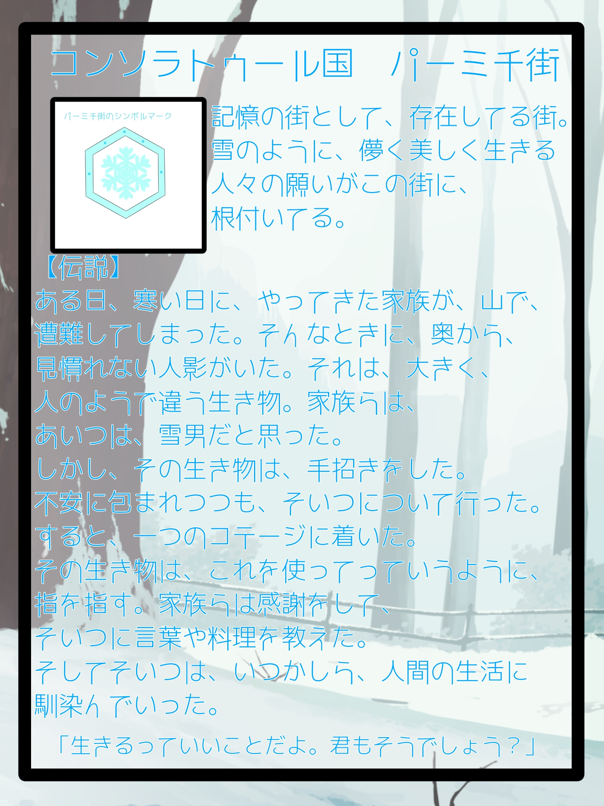

住人を見る →情熱の街 パシオン街
赤き炎のように、鮮やかに、美しく生きる人々の願いが、 この街に根付いている。

📜 街に伝わる伝説
炎を操る勇者
ある日、戦記時代にて、パシオン街出身の勇者が、 炎を扱い戦いに向かった。
勇者は一人で戦場に向かった。 そして、勢いで攻めてくる敵たちを前に、 素手で大きな炎を出し、辺りを燃やし尽くしたと言う。
そんな勇者の像が、パシオン街の城の広場に建てられている。
「新たなる時代を切り開く為の炎を 無駄にしては行けない。永遠のためだ。」
✧ パシオン街の守り神
炎の女神 ウェティアー
パシオン街を作り上げ、パシオン街のお城の炎を守っている女神。
彼女の存在については、存在しているのか、していないのかという噂が絶えない。 一応、存在自体はしているものの、それが人型なのかは分かっていない。
たまに、お城の炎が彼女自身なのかもしれないと言われている。 その炎は特殊なもので、何をしても消えることはない。
コンソラトゥール国の街の中では、3番目に長寿の女神。
 住人を見る →
住人を見る →
希望の街 希望街
輝く光のように明るく美しく生きる人々の願いが、 この街に根付いている。

📜 街に伝わる伝説
赤き龍と水のベール
昔、この街には大きな龍が存在していた。 赤く、美しい体を持つ龍だった。
しかし、辺りは戦争の真っただ中。 そう、戦記時代である。
困った住民たちは、龍に願いを託した。 この街を守ってくれと。
龍は頷き、大きな体を奮い立たせ、 近くの海を使い、大きく優しいカバーで 街全体を包み込んだ。 それは、まるで水のベールのようだった。
龍のしっぽで戦場の人々を払い、 敵国は逃げていった。
そんな龍は、いつの間にか姿を消してしまった。 住民たちはその龍を尊敬し、 街のメインストリートに像を建てた。
「何を言っても彼らは可愛いもんじゃ」
✧ 希望街の守り神
光の女神 北斗
希望街を統治している女神。 お目にかかることは少ないが、 実際に会うことができる神様。
性格は明るく、冗談も言うタイプ。 しかし、人間の常識的なものが少し理解できておらず、 世間離れした行動をしてしまう時がある。
紅花との関係
戦記時代に希望街を守ってくれた龍、 現紅花（ホンファ）にはとても感謝している。
その感謝から、メインストリートに紅花の石像を作った。 しかし、紅花からは「恥ずかしい」と言われてしまった。
結局、なんやかんやで許され、 今では人気スポットになっている。
コンソラトゥール国の街の中では、 1番長寿の女神。

住人を見る →夢の街 夢見街
霧のように深く美しく生きる人々の願いが、 この街に根付いている。

📜 街に伝わる伝説
夢見の少女
ある日、この街の夜には不気味な妖怪がいると騒がれていた。 しかし、その正体を知る者は誰もいなかった。
そんな中、とある少女が夢を見て、予言を受けた。 その少女の言うことは本当に起きた。
そして、妖怪による仕業も、 その少女のお陰で被害が減っていった。
少女は人々から崇められていく。 夢見の少女。
この後、その少女の家系は予言者になり、 今も存在している。
本人たちがどう思っているのかは分からないが、 この街の為なら、きっといい事だろう。
「別に嫌じゃないけど、必要以上に反応されるのは嫌ね。 期待って荷が重いわね。」
✧ 夢見街の守り神
霧の神様 霧野様
普段は街に現れないが、時々早朝に神社などにふらっと現れ、 掃除をしていたりする心優しい神様。
今も信仰はされているが、最近はその存在を知らない人や、 見たことがない人もいるため、本当に霧のようになっている。
ちなみに、夢予言の巫女さんの夢にも出てくるらしい。 そもそも彼が予言を告げているのかもしれない。

住人を見る →記憶の街 パーミチ街
記憶の街として存在している街。
雪のように儚く美しく生きる人々の願いが、この街に根付いている。

✧ 雪山で出会った不思議な生き物
ある寒い日、パーミチ街を訪れた家族が山で遭難してしまった。
途方に暮れていたその時、奥の方に見慣れない人影が現れた。
それは大きく、人のようでいて人とは違う生き物だった。
家族はその姿を見て、雪男なのではないかと思った。
しかし、その生き物は家族に向かって手招きをした。
不安を抱えながらも後をついていくと、一軒のコテージにたどり着いた。
生き物は、これを使ってほしいと言うように指を差した。
家族は感謝を伝え、その生き物に言葉や料理を教えた。
そしていつしか、その生き物は人間の生活に馴染んでいったという。
「生きるっていいことだよ。君もそうでしょう？」
✧ パーミチ街の守り神
氷の女神 リオー
パーミチ街にある湖には、大きな氷が存在している。
その氷の中には、蹲るように座っている女神の姿が見える。
湖には、誰も中へ入ることができないようにバリアが張られている。
そのため、近くまで行くことはできても、女神の姿が少し見えるだけで、近づくことはできない。
コンソラトゥール都市
メイン都市
コンソラトゥール国の中心に位置する、国のメイン都市。
大きな王宮の城がそびえ立ち、南の方には魔法学園が存在している。
風が穏やかに吹き、草木の香りが漂う美しい場所。
城下町にはさまざまな店やガーデンがあり、
穏やかで心地よい景色が広がっている。
願望の森 ウィッシュ森
願望の森として存在する、コンソラトゥール国の北に広がる広大な森。
森の奥へと進んでいくと、夢想の村として知られるレヴリー村が存在している。
レヴリー村の周辺まで近づくと、辺りにはキラキラとしたホワホワが舞い始める。
まるで夢の中に迷い込んだかのような、可愛らしく不思議な景色が広がっている。
夢想の村 レヴリー村
夢想の村と呼ばれる、ウィッシュ森の奥に存在する集落。
ここにはエルフが多く暮らしており、
エルフ独自の文化や生活様式を大切にしながら日々を過ごしている。
森の奥深くに位置する、エルフたちの暮らしが息づく村。